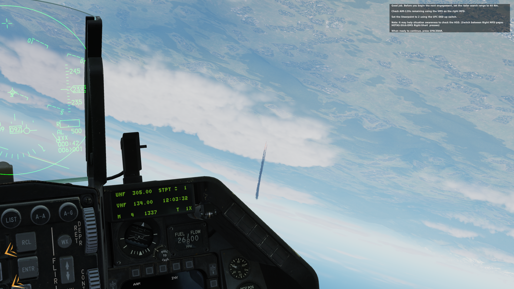
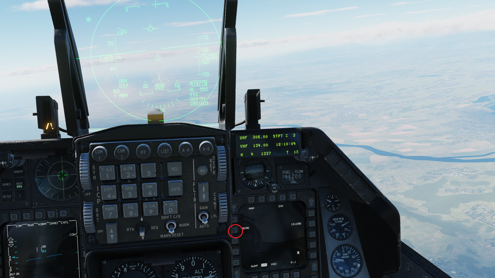
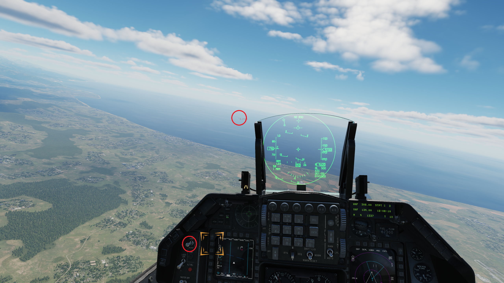

.jpg)
Beyond Visual Range missiles
I. Introduction
A BVR (or beyond visual) fight is one of the most important aspect when it comes to air-to-air combat engagements as you have a missile that can reach a target further than you can see, that may give yourself a chance to launch a supprise attack on enemy pilots and reducing risks of being detected.
• An overview of Beyond Visual Range air-to-air missiles.
1. What are BVR missiles?
an air-to-air missile (BVRAAM) that is capable of engaging at ranges of 20 nautical miles (37 km) or beyond. This range has been achieved using dual pulse rocket motors or booster rocket motor and ramjet sustainer motor. In addition to the range capability, the missile must also be capable of tracking its target at this range or of acquiring the target in flight. Systems in which a mid-course correction is transmitted to the missile have been used (Wikipedia).
2. The development of BVR missiles
- Semi-active radar homing missiles: Early air-to-air missiles used semi-active radar homing guidance, that is the missile used the radiation produced by the launching aircraft to guide it to the target. The latest generation of BVR missiles use a combination of semi-active and active radar. An expample of this is AIM-7 Sparrow from USAF and R-27ER from VVS (Russian Air force). We call it "Fox 1" according to the NATO brevity code.
- Active radar homing missiles: is a missile guidance method in which a missile contains a radar transceiver (in contrast to semi-active radar homing, which uses only a receiver) and the electronics necessary for it to find and track its target autonomously, launch aircrafts can break away after firing the missile. An instance of this is AIM-120 AMRAAM from USAF and R-77 (AA-12 Adder) from VVS (Russian Air force). We call it "Fox 3" according to the NATO brevity code.
II. Operating AIM-120 in an F-16
• About AIM-120 air-to-air missiles
In our F-16C module, one of the most effective and commonly used BVR missile is an AIM-120 AMRAAM, an American beyond-visual-range air-to-air missile capable of all-weather day-and-night operations. It is also a fire and forget weapon as it capable of tracking the target by itself, giving the pilot more opportunities to defend against incoming missile threats.
1. AIM-120 variants
There are 2 variants of the AMRAAM featured in DCS, can be used depends on the players tactics, these are:
- AIM-120 Bravo (AIM-120B): a variant which has bigger fins and provide better maneuverability, suitable for medium range and maneuverable targets.

- AIM-120 Charlie (AIM-120C): a variant which has has a smaller fins, better engines which can operate against long range targets.

• Operating AIM-120 in your F-16
It's time to step on our F-16 and shoot the enemy out of our skies, operating the weapon system in an F-16 is either long and confusing, so i will simplyfy it as much as i can. Let's get right into it.
1. Turn on all the related functions related to weapons and aviation systems:
a. Required system that has to be enabled in an air-to-air engagements.
- turn on your RWR (radar warning receiver) and countermeasures: this system issues a warning when a radar signal that might be a threat is detected, such as the enemy's aircraft radar lock. And preventing enemy's missiles to track with countermearsures.


b. Entering air-to-air mode
- Turn on the FCR (fire control radar) by switching the FCR switch from "Off" to "FCR": This will allow you to have access to the radar lock system to lock the enemy. This radar system can operate between 5-160 nautical miles.


- Enable the master arms by switching master arm switch to "MASTER ARM" and selecting air-to-air mode by pressing the air-to-air button on the Integrated Control Panel (ICP): after this step, the aircraft will have access to all of the weapons available on its system and ready to fire.


**And that's it, You should be ready to fire and use any kind of weapons available in your aircraft at this point.**
- And lastly, select your AIM-120 in the right MFD, you can either choose between the B and C variant.

2. AIM-120 usage.
There are many BVR shooting mode in this F-16 module. However, this tutorial will cover only 2 basic modes that can be used by a missiles: Using radar lock and using boresight mode.
a. Radar locking mode: This method uses the radar to lock and engage the targets from afar, ensures a low profile and avoid detection. It can be done by the following steps:
Step 1: Cycle and find the target via the FCR at the left MFD: you can either use radar cursor switches if you have a flightstick, or ; / . , as up, right, down, left respectively for the keyboard.

Step 2: Lock the target using the radar: you can lock the target using target management switch up button on your flightstick or ctrl + arrow up on your keyboard.

Step 3: Approach the enemy and fire the missiles: After locking the enemy, you should see a square box in your HUD, represents the location of the enemy, and a small circle. Approach the enemy until the circle gets bigger and release your missiles my holding right Alt + Home on keyboard:

Step 4: Wait for the missile to active and break away: After launching the missile, check your HUD to see the letter A with a number next to it, represents the estimatied time for it to get active (first image). After the countdown is over, and letter A replaced by T, it means that the missile is now active (second image) and you can break away after that.
After you break away, hope for the best and voila! the target is down
b. Boresight mode: This method uses the boresight to track its target without a radar lock, the pilot has to keep the target in a circle for the missile to track the target, suitable for medium ranged engangement. AIM-120C is preferred for this mode.
Step 1: Select boresight mode from the SMS page, right MFD: After selecting it, the HUD should have a big circle as the first time we select air-to-air mode.
Step 2: find the target until you see it visually: you can either use the FCR to search for it, but locking it is not reccommend. Once you see the target visually, turn your radar to Silence.
Step 4: Keep the target inside the circle and fire your missile: The missile is now in proper range and it will likely hit the target if there are no countermearsures applied